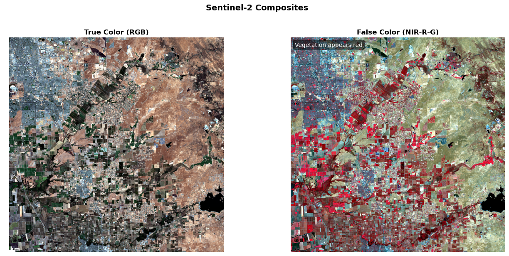

Setting up the geospatial AI toolkit and accessing satellite imagery
Introduction
Welcome to your first hands-on session with geospatial AI! Today we’ll set up the core tools you’ll use throughout this course and get you working with real satellite imagery immediately. No theory-heavy introductions – we’re diving straight into practical data access and exploration.
Learning Goals
By the end of this session, you will:
Have a working geospatial AI environment
Pull real Sentinel-2/Landsat imagery via STAC APIs
Load and explore satellite data with rasterio and xarray
Create interactive maps with folium
Understand the basics of multi-spectral satellite imagery
Course Structure Overview
This accelerated seminar follows a hands-on progression:
Week
Focus
Hands-on Activity
Key Tools
Goal
1
Core Tools & Data Access
Pull satellite imagery via STAC API
rasterio, xarray, folium, pystac-client
Everyone can load and explore geospatial data
2
Rapid Preprocessing
Process Sentinel-2 scenes for AOI
rasterio, numpy, dask
Reproducible preprocessing pipeline
3
ML on Remote Sensing
Train CNN on land cover patches
PyTorch, torchgeo, sklearn
End-to-end ML workflow
4
Foundation Models
Use pretrained geospatial models
transformers, torch
Compare FM vs scratch models
5
Fine-tuning
Adapt models for new tasks
transformers, torch
Efficient transfer learning
6
Spatiotemporal & Projects
Time series analysis + project proposals
xarray, matplotlib
Independent project planning
Step 1: Environment Setup and Helper Functions
We’ll start by setting up our environment and creating reusable helper functions that you’ll use throughout the course. These functions handle common tasks like data loading, visualization, and processing.
Verify Your Environment
Environment Verification:
Before we begin, let’s verify that your environment is properly configured. Your environment should include the following packages:
rasterio, xarray, rioxarray: Core geospatial data handling
torch, transformers: Deep learning and foundation models
folium: Interactive mapping
matplotlib, numpy, pandas: Data analysis and visualization
pystac-client, planetary-computer: STAC API access
geopandas: Vector geospatial data
import sysimport importlib.metadataimport warningsimport oswarnings.filterwarnings('ignore')def verify_environment(required_packages: list) ->dict:""" Verify that all required packages are installed. Parameters ---------- required_packages : list List of package names to verify Returns ------- dict Dictionary with package names as keys and versions as values """ results = {} missing_packages = []for package in required_packages:try: version = importlib.metadata.version(package) results[package] = versionexcept importlib.metadata.PackageNotFoundError: missing_packages.append(package) results[package] =None# Report resultsif missing_packages:print(f"❌ Missing packages: {', '.join(missing_packages)}")return resultsprint(f"✅ All {len(required_packages)} packages verified")return results# Verify core geospatial AI environmentrequired_packages = ['rasterio', 'xarray', 'torch', 'transformers','folium', 'matplotlib', 'numpy', 'pandas','pystac-client', 'geopandas', 'rioxarray', 'planetary-computer']package_status = verify_environment(required_packages)
✅ All 12 packages verified
Import Essential Libraries and Create Helper Functions
# Core geospatial librariesimport rasteriofrom rasterio.warp import calculate_default_transform, reproject, Resamplingimport xarray as xrimport rioxarray # Extends xarray with rasterio functionality# Data access and processingimport numpy as npimport pandas as pdimport geopandas as gpdfrom pystac_client import Clientimport planetary_computer as pc # For signing asset URLs# Visualizationimport matplotlib.pyplot as pltimport foliumfrom folium import plugins# Utilitiesfrom typing import Dict, List, Tuple, Optional, Unionfrom pathlib import Pathimport jsonimport timefrom datetime import datetime, timedeltaimport logging# Deep learning librariesimport torch# Configure matplotlib for publication-quality plotsplt.rcParams.update({'figure.figsize': (10, 6),'figure.dpi': 100,'font.size': 10,'axes.titlesize': 12,'axes.labelsize': 10,'xtick.labelsize': 9,'ytick.labelsize': 9,'legend.fontsize': 9})# Configure logging for production-ready codelogging.basicConfig(level=logging.INFO, format='%(asctime)s - %(levelname)s - %(message)s')logger = logging.getLogger(__name__)
Geospatial AI Toolkit: Comprehensive Helper Functions
This chapter is organized to guide you through the essential foundations of geospatial data science and AI. The file is structured into clear sections, each focusing on a key aspect of the geospatial workflow:
Library Imports and Setup: All necessary Python packages are imported and configured for geospatial analysis and visualization.
Helper Functions: Modular utility functions are introduced to streamline common geospatial tasks.
Sectioned Capabilities: Each major capability (such as authentication, data access, and processing) is presented in its own section, with explanations of the underlying design patterns and best practices.
Progressive Complexity: Concepts and code build on each other, moving from foundational tools to more advanced techniques.
This structure is designed to help you understand not just how to use the tools, but also why certain architectural and security decisions are made—preparing you for both practical work and deeper learning as you progress through the course.
Section 1: STAC Authentication and Security 🔐
Learning Objectives
Understand API authentication patterns for production systems
Implement secure credential management for cloud services
Design robust authentication with fallback mechanisms
Apply enterprise security best practices to geospatial workflows
Why Authentication Matters in Geospatial AI
Modern satellite data access relies on cloud-native APIs that require proper authentication for:
Rate Limit Management: Authenticated users get higher request quotas
Access Control: Some datasets require institutional or commercial access
Usage Tracking: Providers need to monitor and bill for data access
Security: Prevents abuse and ensures sustainable data sharing
def setup_planetary_computer_auth() ->bool:""" Configure authentication for Microsoft Planetary Computer. Uses environment variables and .env files for credential discovery, with graceful degradation to anonymous access. Returns ------- bool True if authenticated, False for anonymous access """# Try environment variables first (production) auth_key = os.getenv('PC_SDK_SUBSCRIPTION_KEY') or os.getenv('PLANETARY_COMPUTER_API_KEY')# Fallback to .env file (development)ifnot auth_key: env_file = Path('.env')if env_file.exists():try:withopen(env_file) as f:for line in f: line = line.strip()if line.startswith(('PC_SDK_SUBSCRIPTION_KEY=', 'PLANETARY_COMPUTER_API_KEY=')): auth_key = line.split('=', 1)[1].strip().strip('"\'')breakexceptException:pass# Continue with anonymous access# Configure authenticationif auth_key andlen(auth_key) >10:try: pc.set_subscription_key(auth_key) logger.info("Planetary Computer authentication successful")returnTrueexceptExceptionas e: logger.warning(f"Authentication failed: {e}") logger.info("Using anonymous access (basic rate limits)")returnFalse# Initialize authenticationauth_status = setup_planetary_computer_auth()
2025-09-20 21:47:28,727 - INFO - Using anonymous access (basic rate limits)
Security Best Practices
Never hardcode credentials in source code or notebooks
Use environment variables for production deployments
Section 2: STAC Data Discovery 🔍
Learning Objectives
Master cloud-native data discovery patterns
Understand STAC query optimization strategies
Implement robust search with intelligent filtering
Design scalable data discovery for large-scale analysis
Cloud-Native Data Access Architecture
STAC APIs represent a paradigm shift from traditional data distribution:
Step 2: Understanding STAC APIs and Cloud-Native Geospatial Architecture
Learning Objectives
By the end of this section, you will:
Understand the STAC specification and its role in modern geospatial architecture Connect to cloud-native data catalogs with proper authentication Explore available satellite datasets and their characteristics Design robust data discovery workflows for production systems
The STAC Revolution: From Data Downloads to Cloud-Native Discovery
STAC (SpatioTemporal Asset Catalog) represents a fundamental shift in how we access geospatial data. Instead of downloading entire datasets (often terabytes), STAC enables intelligent, on-demand access to exactly the data you need.
Why STAC Matters for Geospatial AI
Traditional satellite data distribution faced several challenges. Users were required to download and store massive datasets locally, leading to significant storage bottlenecks. There was no standardized way to search across different providers, making data discovery difficult. Before analysis could begin, heavy preprocessing was often necessary, creating additional barriers. Furthermore, tracking data lineage and updates was challenging, complicating version control.
STAC addresses these issues by enabling federated discovery, allowing users to search across multiple data providers through a unified interface. It supports lazy loading, so only the necessary spatial and temporal subsets are accessed. The use of rich, standardized metadata enables intelligent filtering of data. Additionally, STAC is optimized for the cloud, providing direct access to analysis-ready data stored remotely.
STAC Architecture Components
The STAC architecture is composed of several key elements. STAC Items represent individual scenes or data granules, each described with standardized metadata. These items are grouped into STAC Collections, which organize related items, such as all Sentinel-2 data. Collections and items are further structured within STAC Catalogs, creating a hierarchical organization that enables efficient navigation and discovery. Access to these resources is provided through STAC APIs, which are RESTful interfaces designed for searching and retrieving geospatial data.
Practical STAC Connection: Microsoft Planetary Computer
Microsoft Planetary Computer hosts one of the world’s largest STAC catalogs, providing free access to petabytes of environmental data. Let’s establish a robust connection and explore available datasets.
Testing STAC Connectivity and Catalog Discovery
This connection test demonstrates several important concepts for production geospatial systems:
# Connect to STAC catalogtry: catalog = Client.open("https://planetarycomputer.microsoft.com/api/stac/v1", modifier=pc.sign_inplace ) logger.info("Connected to Planetary Computer STAC API")# Get catalog informationtry: catalog_info = catalog.get_self() logger.info(f"Catalog: {catalog_info.title}")exceptException: logger.info("Basic connection successful")# Explore key satellite datasets satellite_collections = {'sentinel-2-l2a': 'Sentinel-2 Level 2A (10m optical)','landsat-c2-l2': 'Landsat Collection 2 Level 2 (30m optical)','sentinel-1-grd': 'Sentinel-1 SAR (radar)','naip': 'NAIP (1m aerial imagery)' } available_collections = []for collection_id, description in satellite_collections.items():try: collection = catalog.get_collection(collection_id) available_collections.append(collection_id) logger.info(f"Available: {description}")exceptException: logger.warning(f"Not accessible: {description}") logger.info(f"Accessible collections: {len(available_collections)}/{len(satellite_collections)}")exceptExceptionas e:print(f"\n❌ STAC connection failed: {str(e)}")print(f"\n🔧 Troubleshooting steps:")print(f" 1. Verify internet connectivity")print(f" 2. Check Planetary Computer API status: https://planetarycomputer.microsoft.com/")print(f" 3. Ensure pystac-client is installed: pip install pystac-client")print(f" 4. Verify planetary-computer package: pip install planetary-computer")print(f" 5. Try again in a few minutes (temporary API issues)")# Provide fallback information for educational purposesprint(f"\n📚 Educational Note: Even without connection, you now understand:")print(f" • STAC APIs provide standardized geospatial data access")print(f" • Cloud-native architectures eliminate data download requirements")print(f" • Federated catalogs enable multi-provider data discovery")print(f" • Authentication enables enhanced rate limits and access control")
2025-09-20 21:47:29,361 - INFO - Connected to Planetary Computer STAC API
2025-09-20 21:47:29,362 - INFO - Basic connection successful
2025-09-20 21:47:30,493 - INFO - Available: Sentinel-2 Level 2A (10m optical)
2025-09-20 21:47:30,679 - INFO - Available: Landsat Collection 2 Level 2 (30m optical)
2025-09-20 21:47:30,861 - INFO - Available: Sentinel-1 SAR (radar)
2025-09-20 21:47:31,042 - INFO - Available: NAIP (1m aerial imagery)
2025-09-20 21:47:31,043 - INFO - Accessible collections: 4/4
Connection Troubleshooting
If you encounter connection issues, first verify your internet connectivity and check your firewall settings. Keep in mind that anonymous users have lower API rate limits than authenticated users, which can also cause problems. You should also check the Planetary Computer status page to see if there are any ongoing outages. Finally, make sure you have the latest versions of both the pystac-client and planetary-computer packages installed.
The connection process demonstrates real-world challenges in building production geospatial systems.
Understanding Collection Metadata and Selection Criteria
Each STAC collection contains rich metadata that helps you choose the right dataset for your analysis. Let’s explore how to make informed decisions about which satellite data to use:
Step 3: Spatial Analysis Design - Defining Areas of Interest
Learning Objectives
By the end of this section, you will be able to understand coordinate systems and bounding box conventions in geospatial analysis, design effective study areas based on analysis objectives and data characteristics, create interactive maps for spatial context and validation, and apply best practices for reproducible spatial analysis workflows. :::
The Art and Science of Spatial Scope Definition
Defining your Area of Interest (AOI) is a critical design decision that influences several aspects of your analysis. The size of the area determines the amount of data you need to process and store. The validity of your analysis depends on how well your study boundaries align with relevant ecological or administrative regions. The location of your AOI affects satellite revisit patterns and data availability, and the way you define your area can impact processing efficiency, such as the choice of optimal tile sizes for your workflow.
Coordinate Systems and Bounding Box Conventions
For our AOI definition, we will use the WGS84 geographic coordinate system (EPSG:4326). In this system, longitude (X) represents the east-west position and ranges from -180° to +180°, with negative values indicating west. Latitude (Y) represents the north-south position and ranges from -90° to +90°, with negative values indicating south. Bounding boxes are formatted as [west, south, east, north], corresponding to (min_x, min_y, max_x, max_y).
Study Area Selection: San Francisco Bay Area
We’ll use the San Francisco Bay Area as our exemplar study region because it features a mix of urban, water, agricultural, and natural environments. The region is characterized by dynamic processes such as urban growth, vegetation changes, and water level fluctuations. It also benefits from frequent satellite coverage with minimal cloud interference and presents geographic complexity, including islands, peninsulas, and varied topography.
Designing Area of Interest (AOI) for Geospatial Analysis
This demonstrates spatial scope definition for satellite-based studies. We’ll work with the San Francisco Bay Area as our primary study area.
# Step 3A: Define Area of Interest with Geographic Reasoning# Primary study area: San Francisco Bay Area# Coordinates chosen to encompass the greater metropolitan regionsf_bay_bbox = [-122.5, 37.3, -121.8, 38.0] # [west, south, east, north]# Import required libraries for spatial calculationsfrom shapely.geometry import boximport os# Create geometry object for area calculationsaoi_geom = box(*sf_bay_bbox)# Calculate basic spatial metricsarea_degrees = aoi_geom.area# Approximate conversion to kilometers (valid for mid-latitudes)center_lat = (sf_bay_bbox[1] + sf_bay_bbox[3]) /2lat_correction = np.cos(np.radians(center_lat))area_km2 = area_degrees * (111.32**2) * lat_correction # 1 degree ≈ 111.32 kmprint(f"\n📊 AOI Spatial Characteristics:")print(f" 📍 Region: San Francisco Bay Area")print(f" 🗺️ Bounding box: {sf_bay_bbox}")print(f" 📐 Dimensions: {(sf_bay_bbox[2] - sf_bay_bbox[0]):.2f}° × {(sf_bay_bbox[3] - sf_bay_bbox[1]):.2f}°")print(f" 📏 Approximate area: {area_km2:.0f} km²")print(f" 🏙️ Population: ~8 million (Bay Area metropolitan region)")# Provide alternative study areas for different research interestsprint(f"\n🌐 Alternative AOI Options for Different Study Objectives:")alternative_aois = {"Los Angeles Basin": {"bbox": [-118.7, 33.7, -118.1, 34.3],"focus": "Urban heat islands, air quality, sprawl patterns","challenges": "Frequent clouds, complex topography" },"New York City": {"bbox": [-74.3, 40.5, -73.7, 40.9],"focus": "Dense urban analysis, coastal processes","challenges": "Seasonal cloud cover, urban shadows" },"Central Valley Agriculture": {"bbox": [-121.5, 36.0, -120.0, 37.5],"focus": "Crop monitoring, irrigation patterns, drought","challenges": "Seasonal variations, haze" },"Florida Everglades": {"bbox": [-81.5, 25.0, -80.0, 26.5],"focus": "Wetland monitoring, water levels, restoration","challenges": "Frequent clouds, seasonal flooding" }}for region, info in alternative_aois.items(): bbox = info["bbox"] area_alt = ((bbox[2] - bbox[0]) * (bbox[3] - bbox[1]) * (111.32**2) * np.cos(np.radians((bbox[1] + bbox[3]) /2)))print(f" 🗺️ {region}: {info['bbox']} ({area_alt:.0f} km²)")print(f" 🎯 Research focus: {info['focus']}")print(f" ⚠️ Considerations: {info['challenges']}")print(f"\n💡 Pro Tip: Choose AOI based on:")print(f" 1. Research objectives and required spatial resolution")print(f" 2. Data availability and typical cloud cover patterns")print(f" 3. Computational resources and processing time constraints")print(f" 4. Ecological or administrative boundary alignment")
📊 AOI Spatial Characteristics:
📍 Region: San Francisco Bay Area
🗺️ Bounding box: [-122.5, 37.3, -121.8, 38.0]
📐 Dimensions: 0.70° × 0.70°
📏 Approximate area: 4808 km²
🏙️ Population: ~8 million (Bay Area metropolitan region)
🌐 Alternative AOI Options for Different Study Objectives:
🗺️ Los Angeles Basin: [-118.7, 33.7, -118.1, 34.3] (3698 km²)
🎯 Research focus: Urban heat islands, air quality, sprawl patterns
⚠️ Considerations: Frequent clouds, complex topography
🗺️ New York City: [-74.3, 40.5, -73.7, 40.9] (2255 km²)
🎯 Research focus: Dense urban analysis, coastal processes
⚠️ Considerations: Seasonal cloud cover, urban shadows
🗺️ Central Valley Agriculture: [-121.5, 36.0, -120.0, 37.5] (22341 km²)
🎯 Research focus: Crop monitoring, irrigation patterns, drought
⚠️ Considerations: Seasonal variations, haze
🗺️ Florida Everglades: [-81.5, 25.0, -80.0, 26.5] (25114 km²)
🎯 Research focus: Wetland monitoring, water levels, restoration
⚠️ Considerations: Frequent clouds, seasonal flooding
💡 Pro Tip: Choose AOI based on:
1. Research objectives and required spatial resolution
2. Data availability and typical cloud cover patterns
3. Computational resources and processing time constraints
4. Ecological or administrative boundary alignment
Interactive Mapping for Spatial Context and Validation
Creating interactive maps serves several important purposes in geospatial analysis, such as providing spatial context to understand the geographic setting and features, validating that the area of interest (AOI) encompasses the intended study features, supporting stakeholder communication through visual representation for project discussions, and enabling quality assurance by helping to detect coordinate errors or unrealistic extents.
Creating Interactive Map for Spatial Context:
This demonstrates best practices for geospatial visualization with multiple basemap options.
2025-09-20 21:47:31,084 - INFO - Adding 4 geographic reference points
2025-09-20 21:47:31,085 - INFO - Adding interactive analysis tools
2025-09-20 21:47:31,086 - INFO - Interactive map created with comprehensive spatial context
📚 Adding 4 basemap options:
• CartoDB positron: Data overlay visualization, presentations
• CartoDB dark_matter: Night mode, reducing eye strain
• Esri World Imagery: Ground truth validation, visual interpretation
• Stamen Terrain: Elevation context, watershed analysis
Make this Notebook Trusted to load map: File -> Trust Notebook
AOI Design Best Practices
Size Considerations:
When defining your Area of Interest (AOI), consider that an area too small may miss important spatial patterns or edge effects, while an area too large can increase processing time and may include irrelevant regions. Aim for a balance that ensures computational efficiency without sacrificing analytical completeness.
Boundary Alignment:
AOI boundaries can be aligned with ecological features such as watersheds, ecoregions, or habitat boundaries; with administrative units like counties, states, or protected areas; or with sensor-based divisions such as satellite tile boundaries and processing units. Choose the alignment that best fits your study objectives.
Temporal Considerations:
Ensure your AOI captures relevant seasonal dynamics and accounts for both historical and projected changes in the study area. Also, verify that data coverage is consistent across your intended temporal study period.
Validating Your AOI Selection
Before proceeding with data acquisition, confirm that your AOI is well-matched to your analysis objectives.
Step 4: Intelligent Satellite Scene Discovery and Selection
Intelligent Satellite Scene Discovery
Selecting appropriate satellite imagery is a multi-faceted challenge that requires balancing several key factors: temporal coverage (recent vs. historical data), data quality (cloud cover, sensor conditions, processing artifacts), spatial coverage (ensuring your AOI is fully captured), and the processing level of the data (raw vs. analysis-ready products). Relying on a single search strategy often leads to missed opportunities or suboptimal results, especially when data availability is limited by weather or acquisition schedules.
To address these challenges, a robust approach involves designing and implementing multi-strategy search patterns. This means systematically applying a sequence of search strategies, each with progressively relaxed criteria—such as expanding the temporal window or increasing the allowable cloud cover. By doing so, you maximize the chances of finding suitable imagery while still prioritizing the highest quality data available. This method is widely used in operational geospatial systems to ensure reliable and efficient satellite scene discovery, even under less-than-ideal conditions.
By the end of this section, you will be able to design robust, multi-strategy search workflows for satellite data discovery, understand how quality filters and temporal windows affect data availability, implement fallback mechanisms to guarantee reliable data access, and evaluate scene metadata to select the most appropriate imagery for your analysis.
# Step 4A: Implement Robust Multi-Strategy Scene Discoveryfrom datetime import datetime, timedelta# Strategy 1: Dynamic temporal window based on current datecurrent_date = datetime.now()logger.info(f"Calculating optimal temporal search windows (current date: {current_date.strftime('%Y-%m-%d')})")# Define multiple search strategies with different trade-offs# Each strategy balances data quality against data availabilitysearch_strategies = [ {"name": "Optimal Quality","date_range": "2024-06-01/2024-09-30","cloud_max": 20,"description": "Recent summer data with excellent atmospheric conditions","priority": "Best for analysis quality","trade_offs": "May have limited availability" }, {"name": "Good Quality","date_range": "2024-03-01/2024-08-31","cloud_max": 35,"description": "Extended seasonal window with good conditions","priority": "Balance of quality and availability","trade_offs": "Some atmospheric interference" }, {"name": "Acceptable Quality","date_range": "2023-09-01/2024-11-30","cloud_max": 50,"description": "Broader temporal and quality window","priority": "Reliable data availability","trade_offs": "May require additional preprocessing" }, {"name": "Fallback Option","date_range": "2023-01-01/2024-12-31","cloud_max": 75,"description": "Maximum temporal window, relaxed quality constraints","priority": "Guaranteed data access","trade_offs": "Significant cloud contamination possible" }]logger.info(f"Defined {len(search_strategies)} search strategies")for i, strategy inenumerate(search_strategies, 1): logger.debug(f"Strategy {i}: {strategy['name']} - {strategy['description']}")# Execute search strategies in order of preferencescenes = []successful_strategy =Nonefor i, strategy inenumerate(search_strategies, 1): logger.info(f"Executing Strategy {i}: {strategy['name']} (dates: {strategy['date_range']}, cloud < {strategy['cloud_max']}%)")try:# Use our optimized search function with current strategy parameters temp_scenes = search_sentinel2_scenes( bbox=sf_bay_bbox, date_range=strategy["date_range"], cloud_cover_max=strategy["cloud_max"], limit=100# Generous limit for selection flexibility )if temp_scenes: scenes = temp_scenes successful_strategy = strategy logger.info(f"SUCCESS! Found {len(scenes)} qualifying scenes with {strategy['name']} strategy")breakelse: logger.warning(f"No scenes found with {strategy['name']} strategy, proceeding to next")exceptExceptionas e: logger.warning(f"Search execution failed for {strategy['name']}: {str(e)[:80]}")continue# Validate search results and provide detailed feedbackifnot scenes: logger.error(f"Scene discovery failed after trying all {len(search_strategies)} strategies") logger.info("Diagnostic steps: 1) Check network connectivity, 2) Verify API status, 3) Confirm AOI coverage, 4) Try broader date ranges, 5) Check authentication")raiseException("Critical failure in scene discovery. Review diagnostic steps and retry.")logger.info(f"Scene discovery completed: {successful_strategy['name']} strategy found {len(scenes)} scenes (attempt {search_strategies.index(successful_strategy) +1}/{len(search_strategies)})")
2025-09-20 21:47:31,106 - INFO - Calculating optimal temporal search windows (current date: 2025-09-20)
2025-09-20 21:47:31,107 - INFO - Defined 4 search strategies
2025-09-20 21:47:31,107 - INFO - Executing Strategy 1: Optimal Quality (dates: 2024-06-01/2024-09-30, cloud < 20%)
2025-09-20 21:47:33,122 - INFO - Found 68 Sentinel-2 scenes (cloud cover < 20%)
2025-09-20 21:47:33,122 - INFO - SUCCESS! Found 68 qualifying scenes with Optimal Quality strategy
2025-09-20 21:47:33,122 - INFO - Scene discovery completed: Optimal Quality strategy found 68 scenes (attempt 1/4)
Scene Quality Assessment and Selection
Once we have candidate scenes, we need to systematically evaluate and select the best option:
Performing Comprehensive Scene Quality Assessment:
This demonstrates multi-criteria decision making for satellite data selection using cloud cover, acquisition date, and other quality metrics.
# Step 4B: Intelligent Scene Selection Based on Multiple Quality Criteria# Sort scenes by multiple quality criteria# Primary: cloud cover (lower is better)# Secondary: date (more recent is better)scenes_with_scores = []logger.info(f"Evaluating {len(scenes)} candidate scenes for quality assessment")for scene in scenes: props = scene.properties# Extract key quality metrics cloud_cover = props.get('eo:cloud_cover', 100) date_str = props.get('datetime', '').split('T')[0] scene_date = datetime.strptime(date_str, '%Y-%m-%d') days_old = (current_date - scene_date).days# Calculate composite quality score (lower is better)# Weight factors: cloud cover (70%), recency (30%) cloud_score = cloud_cover # 0-100 scale recency_score =min(days_old /30, 100) # Normalize to 0-100, cap at 100 quality_score = (0.7* cloud_score) + (0.3* recency_score) scene_info = {'scene': scene,'date': date_str,'cloud_cover': cloud_cover,'days_old': days_old,'quality_score': quality_score,'tile_id': props.get('sentinel:grid_square', 'Unknown'),'platform': props.get('platform', 'Sentinel-2') } scenes_with_scores.append(scene_info)# Sort by quality score (best first)scenes_with_scores.sort(key=lambda x: x['quality_score'])# Display top candidates for educational purposeslogger.info("Top 5 Scene Candidates (ranked by quality score):")for i, scene_info inenumerate(scenes_with_scores[:5], 1): logger.debug(f"{i}. {scene_info['date']} - Cloud: {scene_info['cloud_cover']:.1f}%, Age: {scene_info['days_old']} days, Score: {scene_info['quality_score']:.1f}")if i ==1: logger.info(f"Selected optimal scene: {scene_info['date']}")# Select the best scenebest_scene_info = scenes_with_scores[0]best_scene = best_scene_info['scene']logger.info(f"Optimal scene selected: {best_scene_info['date']} ({best_scene_info['cloud_cover']:.1f}% cloud cover, {best_scene_info['platform']}, Tile: {best_scene_info['tile_id']})")# Validate scene completeness for required analysislogger.info("Validating scene data completeness")required_bands = ['B02', 'B03', 'B04', 'B08'] # Blue, Green, Red, NIRavailable_bands =list(best_scene.assets.keys())spectral_bands = [b for b in available_bands if b.startswith('B') andlen(b) <=3]logger.debug(f"Available spectral bands: {len(spectral_bands)}, Required: {required_bands}")missing_bands = [b for b in required_bands if b notin available_bands]if missing_bands: logger.warning(f"Missing critical bands: {missing_bands} - this may limit analysis capabilities")# Check for alternative bands alternative_mapping = {'B02': 'blue', 'B03': 'green', 'B04': 'red', 'B08': 'nir'} alternatives_found = []for missing in missing_bands: alt_name = alternative_mapping.get(missing, missing.lower())if alt_name in available_bands: alternatives_found.append((missing, alt_name))if alternatives_found: logger.info(f"Found alternative band names: {alternatives_found}")else: logger.info("All required bands available")# Additional quality checksextra_bands = [b for b in spectral_bands if b notin required_bands]if extra_bands: logger.debug(f"Bonus bands available: {extra_bands[:5]}{'...'iflen(extra_bands) >5else''} (enable advanced spectral analysis)")logger.info("Scene validation complete - ready for data loading")# Quick connectivity test using our helper functionlogger.info("Performing pre-flight connectivity test")connectivity_test = test_subset_functionality(best_scene)if connectivity_test: logger.info("Data access confirmed - all systems ready")else: logger.warning("Connectivity issues detected - will attempt full download with fallback mechanisms")
2025-09-20 21:47:33,133 - INFO - Evaluating 68 candidate scenes for quality assessment
2025-09-20 21:47:33,135 - INFO - Top 5 Scene Candidates (ranked by quality score):
2025-09-20 21:47:33,135 - INFO - Selected optimal scene: 2024-09-30
2025-09-20 21:47:33,135 - INFO - Optimal scene selected: 2024-09-30 (0.0% cloud cover, Sentinel-2A, Tile: Unknown)
2025-09-20 21:47:33,136 - INFO - Validating scene data completeness
2025-09-20 21:47:33,136 - INFO - All required bands available
2025-09-20 21:47:33,136 - INFO - Scene validation complete - ready for data loading
2025-09-20 21:47:33,136 - INFO - Performing pre-flight connectivity test
🧪 Testing subset functionality...
📐 Calculated subset from scene bounds:
Scene bbox: [-121.8633, 37.8353, -120.5833, 38.8433]
Subset bbox: [-121.3513, 38.2385, -121.0953, 38.4401]
X range: 40%-60%, Y range: 40%-60%
Subset area: 4.0% of original scene
2025-09-20 21:47:39,352 - INFO - Successfully loaded 1 bands: ['B04']
2025-09-20 21:47:39,353 - INFO - Data access confirmed - all systems ready
✅ Subset test successful: (2280, 2281) pixels, 5200680 total
Scene selection for geospatial analysis should prioritize several key quality criteria. Cloud cover is the most important factor, as it directly affects data usability. Temporal relevance is also critical; more recent data better reflects current conditions. The processing level matters as well—Level 2A data, for example, provides atmospheric correction, which is often preferred. Finally, consider spatial coverage, ensuring that the selected scene fully covers the area of interest rather than only partially.
In production workflows, it is important to have fallback strategies in place, such as using multiple search approaches to ensure data availability. Automated selection can be improved by applying standardized quality scoring metrics. Always validate metadata to confirm that all required bands and assets are present, and test connectivity to the data source before starting major processing tasks.
Before loading data, it is helpful to examine the characteristics of the selected Sentinel-2 scene. For example, you can use the eo:cloud_cover property to filter scenes by cloud coverage. Sentinel-2 satellites revisit the same location every five days, so multiple scenes are usually available for a given area. Level 2A data is already atmospherically corrected, which simplifies preprocessing. Be aware that different satellites may use different naming conventions and have varying properties.
A thorough analysis of scene metadata is essential for designing effective workflows. By systematically inventorying available assets and understanding sensor characteristics, you can take full advantage of the rich metadata provided in STAC items and ensure your analysis is both robust and reliable.
# Step 4C: Comprehensive Scene and Sensor Characterizationif'best_scene'inlocals(): scene_props = best_scene.properties scene_assets = best_scene.assets# Sentinel-2 spectral band specifications with AI applications sentinel2_bands = {'B01': {'name': 'Coastal/Aerosol','wavelength': '443 nm','resolution': '60m','ai_applications': 'Atmospheric correction, aerosol detection' },'B02': {'name': 'Blue','wavelength': '490 nm','resolution': '10m','ai_applications': 'Water body detection, urban classification' },'B03': {'name': 'Green','wavelength': '560 nm','resolution': '10m','ai_applications': 'Vegetation health, true color composites' },'B04': {'name': 'Red','wavelength': '665 nm','resolution': '10m','ai_applications': 'Vegetation stress, NDVI calculation' },'B05': {'name': 'Red Edge 1','wavelength': '705 nm','resolution': '20m','ai_applications': 'Vegetation analysis, crop type classification' },'B06': {'name': 'Red Edge 2','wavelength': '740 nm','resolution': '20m','ai_applications': 'Advanced vegetation indices, stress detection' },'B07': {'name': 'Red Edge 3','wavelength': '783 nm','resolution': '20m','ai_applications': 'Vegetation biophysical parameters' },'B08': {'name': 'NIR (Near Infrared)','wavelength': '842 nm','resolution': '10m','ai_applications': 'Biomass estimation, water/land separation' },'B8A': {'name': 'NIR Narrow','wavelength': '865 nm','resolution': '20m','ai_applications': 'Refined vegetation analysis' },'B09': {'name': 'Water Vapor','wavelength': '945 nm','resolution': '60m','ai_applications': 'Atmospheric water vapor correction' },'B11': {'name': 'SWIR 1','wavelength': '1610 nm','resolution': '20m','ai_applications': 'Fire detection, soil moisture, geology' },'B12': {'name': 'SWIR 2','wavelength': '2190 nm','resolution': '20m','ai_applications': 'Burn area mapping, mineral detection' } }# Additional data products available in Level 2A additional_products = {'SCL': {'name': 'Scene Classification Layer','description': 'Pixel-level land cover classification','ai_applications': 'Cloud masking, quality assessment' },'AOT': {'name': 'Aerosol Optical Thickness','description': 'Atmospheric aerosol content','ai_applications': 'Atmospheric correction validation' },'WVP': {'name': 'Water Vapor Pressure','description': 'Columnar water vapor content','ai_applications': 'Atmospheric correction, weather analysis' },'visual': {'name': 'True Color Preview','description': 'RGB composite for visualization','ai_applications': 'Quick visual assessment, presentation' },'thumbnail': {'name': 'Scene Thumbnail','description': 'Low-resolution preview image','ai_applications': 'Rapid quality screening' } }# Scene technical specifications acquisition_date = scene_props.get('datetime', 'Unknown').split('T')[0] platform = scene_props.get('platform', 'Unknown') cloud_cover = scene_props.get('eo:cloud_cover', 0) tile_id = scene_props.get('sentinel:grid_square', 'Unknown') logger.info(f"Scene: {platform}{acquisition_date}, Cloud: {cloud_cover:.1f}%, Tile: {tile_id}")# Inventory available spectral bands available_spectral = [] available_products = []for band_id, info in sentinel2_bands.items():if band_id in scene_assets: available_spectral.append(band_id) logger.debug(f"Available: {band_id} ({info['name']}, {info['resolution']})")for product_id, info in additional_products.items():if product_id in scene_assets: available_products.append(product_id) logger.debug(f"Available product: {product_id} - {info['name']}")# Analysis readiness assessment core_bands = ['B02', 'B03', 'B04', 'B08'] # Essential for basic analysis advanced_bands = ['B05', 'B06', 'B07', 'B8A', 'B11', 'B12'] # For advanced analysis core_available =sum(1for band in core_bands if band in available_spectral) advanced_available =sum(1for band in advanced_bands if band in available_spectral)# Analysis readiness assessment logger.info(f"Bands available: {core_available}/{len(core_bands)} core, {advanced_available}/{len(advanced_bands)} advanced") logger.info(f"Additional products: {len(available_products)}")# Determine analysis capabilitiesif core_available ==len(core_bands): analysis_capabilities = ["NDVI calculation", "True color visualization", "Basic land cover classification"]if'B11'in available_spectral and'B12'in available_spectral: analysis_capabilities.extend(["Fire detection", "Soil moisture analysis"])if advanced_available >=4: analysis_capabilities.extend(["Advanced vegetation indices", "Crop type classification"])if'SCL'in available_products: analysis_capabilities.append("Automated cloud masking") logger.info(f"Analysis ready: {len(analysis_capabilities)} capabilities enabled")else: missing_core = [band for band in core_bands if band notin available_spectral] logger.warning(f"Limited analysis: missing core bands {missing_core}")# Store technical metadata crs_info =f"EPSG:{scene_props['proj:epsg']}"if'proj:epsg'in scene_props else"UTM" utm_zone = scene_props.get('sentinel:utm_zone', 'Unknown') logger.info(f"Metadata: {crs_info}, UTM zone {utm_zone}, 16-bit COG format")else: logger.warning("No optimal scene selected - cannot perform metadata analysis")
2025-09-20 21:47:39,366 - INFO - Scene: Sentinel-2A 2024-09-30, Cloud: 0.0%, Tile: Unknown
2025-09-20 21:47:39,366 - INFO - Bands available: 4/4 core, 6/6 advanced
2025-09-20 21:47:39,367 - INFO - Additional products: 4
2025-09-20 21:47:39,367 - INFO - Analysis ready: 8 capabilities enabled
2025-09-20 21:47:39,367 - INFO - Metadata: UTM, UTM zone Unknown, 16-bit COG format
Sentinel-2 for AI Applications
Sentinel-2 is well-suited for geospatial AI due to its 13 multi-spectral bands spanning the visible to shortwave infrared range. The satellite offers a high revisit frequency of every 5 days, enabling temporal analysis. Its moderate spatial resolution of 10 to 20 meters is optimal for landscape-scale AI tasks. Sentinel-2 data is freely accessible under an open data policy, which supports large-scale model training. The standardized Level 2A processing ensures consistent data quality, and global coverage provides uniform data characteristics worldwide.
For AI applications, Sentinel-2 offers several advantages. The large data volume supports robust model development and training. The scene classification layer can be used as ground truth for validation. Time series data enables the development of sequence models, and the availability of multiple spatial resolutions allows for hierarchical learning approaches.
Now let’s examine the scene’s geographic characteristics and proceed to data loading.
Step 5: Production-Grade Satellite Data Loading and Processing
Learning Objectives
By the end of this section, you will be able to implement memory-efficient satellite data loading with intelligent subsetting, design adaptive processing strategies based on scene characteristics, create robust error handling for network-dependent data workflows, and build multi-dimensional datasets suitable for AI and machine learning applications.
The Challenge of Large-Scale Satellite Data Loading
Modern satellite scenes can exceed 1GB in size, which requires careful planning for data loading and processing. Efficient memory management is necessary to avoid loading unnecessary data into RAM. Network efficiency is also important to minimize data transfer while maintaining analysis quality. Processing strategies should be adaptive, adjusting to the size and characteristics of each scene. Additionally, workflows must be resilient to network interruptions and data access failures.
Intelligent Data Loading Architecture
The following approach demonstrates production-ready patterns used in operational systems. It implements an intelligent satellite data loading pipeline that adapts processing based on scene characteristics, selecting optimal loading strategies according to the scene size and analysis requirements.
# Step 5A: Scene Analysis and Adaptive Subset Strategy Selectionif'best_scene'inlocals():# Comprehensive scene analysis for optimal loading strategy scene_info = get_scene_info(best_scene) logger.info(f"Scene extent: {scene_info['width_km']:.1f}×{scene_info['height_km']:.1f} km ({scene_info['area_km2']:.0f} km²)")# Adaptive subset strategy based on scene characteristics# Decision matrix for subset sizing subset_strategies = {"large_scene": {"condition": scene_info['area_km2'] >5000,"x_range": (30, 70),"y_range": (30, 70),"coverage": 16, # 40% × 40%"rationale": "Conservative subset for large scenes to manage memory usage","description": "middle 40% (large scene optimization)" },"medium_scene": {"condition": scene_info['area_km2'] >1000,"x_range": (20, 80),"y_range": (20, 80),"coverage": 36, # 60% × 60%"rationale": "Balanced subset for medium scenes","description": "middle 60% (balanced approach)" },"small_scene": {"condition": scene_info['area_km2'] <=1000,"x_range": (10, 90),"y_range": (10, 90),"coverage": 64, # 80% × 80%"rationale": "Maximum coverage for small scenes","description": "most of scene (small scene - maximize coverage)" } }# Select optimal strategy selected_strategy =Nonefor strategy_name, strategy in subset_strategies.items():if strategy["condition"]: selected_strategy = strategy strategy_name_selected = strategy_name logger.info(f"Selected strategy: {strategy_name} ({strategy['coverage']}% coverage)")break# Apply selected subset strategy x_range, y_range = selected_strategy["x_range"], selected_strategy["y_range"] subset_bbox = get_subset_from_scene(best_scene, x_range=x_range, y_range=y_range)# Calculate expected data characteristics subset_area_km2 = scene_info['area_km2'] * (selected_strategy['coverage'] /100) estimated_pixels_10m = subset_area_km2 *1e6/ (10*10) # 10m pixel size# Log subset characteristics logger.info(f"Subset: {subset_area_km2:.0f} km², {estimated_pixels_10m:,.0f} pixels, ~{estimated_pixels_10m *4*2/1e6:.1f} MB")# Alternative subset strategies available for experimentation# Core bands for essential analysis core_bands = ['B04', 'B03', 'B02', 'B08'] # Red, Green, Blue, NIR logger.info(f"Selected {len(core_bands)} core bands for RGB and NDVI analysis")else: logger.warning("No optimal scene available - using default configuration") core_bands = ['B04', 'B03', 'B02', 'B08'] # Default selection subset_bbox =None
2025-09-20 21:47:39,374 - INFO - Scene extent: 111.4×111.9 km (12469 km²)
2025-09-20 21:47:39,375 - INFO - Selected strategy: large_scene (16% coverage)
2025-09-20 21:47:39,375 - INFO - Subset: 1995 km², 19,950,658 pixels, ~159.6 MB
2025-09-20 21:47:39,375 - INFO - Selected 4 core bands for RGB and NDVI analysis
📐 Calculated subset from scene bounds:
Scene bbox: [-121.8633, 37.8353, -120.5833, 38.8433]
Subset bbox: [-121.4793, 38.1377, -120.9673, 38.5409]
X range: 30%-70%, Y range: 30%-70%
Subset area: 16.0% of original scene
High-Performance Data Loading Implementation
Now we’ll implement the actual data loading with comprehensive error handling and performance monitoring:
Executing Production-Grade Data Loading:
This demonstrates enterprise-level error handling and performance optimization with comprehensive pre-loading validation.
2025-09-20 21:47:39,383 - INFO - Loading scene S2A_MSIL2A_20240930T185211_R113_T10SFH_20241001T005349: 4 bands, ~159.6 MB
2025-09-20 21:48:31,051 - INFO - Successfully loaded 4 bands: ['B04', 'B03', 'B02', 'B08']
2025-09-20 21:48:31,052 - INFO - Data loading successful: 51.7s, 3.1 MB/s
Comprehensive Data Validation and Quality Assessment
After loading, we must validate data quality and completeness before proceeding with analysis:
Performing Comprehensive Data Validation:
This demonstrates production-level quality assurance for satellite data including validation of data loading success and quality metrics.
# Step 5C: Comprehensive Data Validation and Quality Assessment# Validate successful data loadingif'band_data'inlocals() and band_data:# Extract loaded bands and metadata available_bands = [b for b in core_bands if b in band_data andisinstance(band_data[b], np.ndarray)]# Extract georeferencing information transform = band_data.get('transform', None) crs = band_data.get('crs', None) bounds = band_data.get('bounds', subset_bbox if'subset_bbox'inlocals() else sf_bay_bbox) scene_id = band_data.get('scene_id', 'Unknown') acquisition_date = band_data.get('date', 'Unknown') logger.info(f"Loaded {len(available_bands)}/{len(core_bands)} bands: {available_bands}") logger.info(f"Scene: {scene_id} ({acquisition_date})")# Quality assessment band_stats_summary = {}for band_name in available_bands:if band_name in band_data: stats = calculate_band_statistics(band_data[band_name], band_name) band_stats_summary[band_name] = stats# Quality flags quality_flags = []if stats['valid_pixels'] < stats['total_pixels'] *0.95: quality_flags.append("invalid pixels")if stats['std'] <10: quality_flags.append("low variance")if stats['max'] >10000: quality_flags.append("possible saturation") quality_status ="; ".join(quality_flags) if quality_flags else"normal" logger.info(f"{band_name}: range [{stats['min']:.0f}, {stats['max']:.0f}], quality: {quality_status}")# Cross-band validationiflen(available_bands) >=2: shapes = [band_data[band].shape for band in available_bands] consistent_shape =all(shape == shapes[0] for shape in shapes) logger.info(f"Spatial consistency: {'✓'if consistent_shape else'⚠'} shape {shapes[0] if consistent_shape else'mixed'}")# Check for reasonable spectral relationshipsif'B04'in available_bands and'B08'in available_bands: ndvi_sample = calculate_ndvi(band_data['B08'][:100, :100], band_data['B04'][:100, :100]) ndvi_mean = np.nanmean(ndvi_sample)# NDVI sanity checkif-1<= ndvi_mean <=1: logger.info(f"NDVI validation passed: mean = {ndvi_mean:.3f}")else: logger.warning(f"NDVI anomaly detected: mean = {ndvi_mean:.3f}")# Overall data readiness assessment readiness_score =0 readiness_criteria = {'bands_available': len(available_bands) >=3, # Minimum for RGB'spatial_consistency': 'consistent_shape'inlocals() and consistent_shape,'valid_pixels': all(stats['valid_pixels'] > stats['total_pixels'] *0.9for stats in band_stats_summary.values()),'spectral_sanity': 'ndvi_mean'inlocals() and-1<= ndvi_mean <=1 } readiness_score =sum(readiness_criteria.values()) max_score =len(readiness_criteria)# Overall data readiness assessment logger.info(f"Data readiness: {readiness_score}/{max_score} criteria passed")if readiness_score >= max_score *0.75: logger.info("STATUS: READY for analysis - High quality data confirmed")elif readiness_score >= max_score *0.5: logger.warning("STATUS: PROCEED WITH CAUTION - Some quality issues detected")else: logger.error("STATUS: QUALITY ISSUES - Consider alternative data sources")else: logger.error("Data validation failed - no valid satellite data available")
2025-09-20 21:48:31,060 - INFO - Loaded 4/4 bands: ['B04', 'B03', 'B02', 'B08']
2025-09-20 21:48:31,061 - INFO - Scene: S2A_MSIL2A_20240930T185211_R113_T10SFH_20241001T005349 (2024-09-30)
2025-09-20 21:48:31,591 - INFO - B04: range [0, 15256], quality: possible saturation
2025-09-20 21:48:32,099 - INFO - B03: range [0, 18400], quality: possible saturation
2025-09-20 21:48:32,590 - INFO - B02: range [0, 19536], quality: possible saturation
2025-09-20 21:48:33,088 - INFO - B08: range [0, 15073], quality: possible saturation
2025-09-20 21:48:33,088 - INFO - Spatial consistency: ✓ shape (4561, 4561)
2025-09-20 21:48:33,089 - INFO - NDVI validation passed: mean = 0.230
2025-09-20 21:48:33,090 - INFO - Data readiness: 4/4 criteria passed
2025-09-20 21:48:33,090 - INFO - STATUS: READY for analysis - High quality data confirmed
Creating AI-Ready Multi-Dimensional Datasets
Transform loaded bands into analysis-ready xarray datasets optimized for AI/ML workflows:
Creating AI-Ready Multi-Dimensional Dataset:
This demonstrates data structuring for machine learning applications, transforming raw satellite bands into analysis-ready xarray datasets.
# Step 5D: Build AI-Ready Multi-Dimensional Datasetif'band_data'inlocals() and band_data and available_bands:# Get spatial dimensions from first available band sample_band = band_data[available_bands[0]] height, width = sample_band.shape# Dataset characteristics total_elements = height * width *len(available_bands) logger.info(f"Dataset: {height}×{width} pixels, {len(available_bands)} bands, {total_elements:,} elements")# Create sophisticated coordinate systemif bounds andlen(bounds) ==4:# Geographic coordinates (WGS84) x_coords = np.linspace(bounds[0], bounds[2], width) # Longitude y_coords = np.linspace(bounds[3], bounds[1], height) # Latitude (north to south) coord_system ="geographic"else:# Pixel coordinates x_coords = np.arange(width) y_coords = np.arange(height) coord_system ="pixel" logger.debug(f"Coordinates: {coord_system}, X: {x_coords[0]:.4f} to {x_coords[-1]:.4f}, Y: {y_coords[0]:.4f} to {y_coords[-1]:.4f}")# Build xarray DataArrays with comprehensive metadata data_arrays = {} band_metadata = {'B02': {'name': 'blue', 'wavelength': 490, 'description': 'Blue band (coastal/aerosol)'},'B03': {'name': 'green', 'wavelength': 560, 'description': 'Green band (vegetation)'},'B04': {'name': 'red', 'wavelength': 665, 'description': 'Red band (chlorophyll absorption)'},'B08': {'name': 'nir', 'wavelength': 842, 'description': 'Near-infrared (biomass/structure)'} }# Build spectral data arraysfor band_id in available_bands:if band_id in band_metadata: metadata = band_metadata[band_id] band_name = metadata['name']# Create DataArray with rich metadata data_arrays[band_name] = xr.DataArray( band_data[band_id], dims=['y', 'x'], coords={'y': ('y', y_coords, {'long_name': 'Latitude'if coord_system =='geographic'else'Y coordinate','units': 'degrees_north'if coord_system =='geographic'else'pixels'}),'x': ('x', x_coords, {'long_name': 'Longitude'if coord_system =='geographic'else'X coordinate','units': 'degrees_east'if coord_system =='geographic'else'pixels'}) }, attrs={'band_id': band_id,'long_name': metadata['description'],'wavelength': metadata['wavelength'],'wavelength_units': 'nanometers','units': 'DN','valid_range': [0, 10000],'scale_factor': 1.0,'add_offset': 0.0 } ) logger.debug(f"Created DataArray: {band_name} ({metadata['wavelength']}nm)")# Create comprehensive Dataset satellite_ds = xr.Dataset( data_arrays, attrs={'title': 'Sentinel-2 Level 2A Surface Reflectance','source': f'Scene: {scene_id}','acquisition_date': acquisition_date,'processing_level': 'L2A','crs': str(crs) if crs else'WGS84 (assumed)','spatial_resolution': '10 meters','coordinate_system': coord_system,'creation_date': pd.Timestamp.now().isoformat(),'processing_software': 'Geospatial AI Toolkit','data_access': 'Microsoft Planetary Computer via STAC' } ) logger.info(f"Created xarray Dataset with {len(data_arrays)} bands: {list(satellite_ds.data_vars)}")print(satellite_ds) # Display dataset structureelse: logger.warning("No band data available for xarray Dataset creation")
2025-09-20 21:48:33,098 - INFO - Dataset: 4561×4561 pixels, 4 bands, 83,210,884 elements
2025-09-20 21:48:33,102 - INFO - Created xarray Dataset with 4 bands: ['red', 'green', 'blue', 'nir']
Rasterio provides lower-level, direct file access and is well-suited for basic geospatial raster operations. Xarray offers a higher-level interface, making it easier to handle metadata and perform advanced analysis. Rioxarray extends xarray by adding geospatial capabilities, effectively bridging the gap between the two approaches.
Step 6: Scientific Visualization and Spectral Analysis
Learning Objectives
By the end of this section, you will be able to design publication-quality visualizations for satellite data analysis, understand the importance of perceptually uniform colormaps in scientific visualization, create informative multi-panel displays with appropriate context and interpretation, and calculate as well as visualize spectral indices for environmental monitoring.
Principles of Scientific Visualization for Remote Sensing
Effective satellite data visualization requires attention to perceptual accuracy, ensuring that colors accurately represent data relationships. It is important to maximize information density to provide insight with minimal cognitive load, while also preserving spatial and temporal context. Additionally, visualizations should be accessible and interpretable by a wide range of audiences.
Advanced Color Composite Creation
if band_data andall(k in band_data for k in ['B04', 'B03', 'B02']):# Create true color RGB composite using our helper function rgb_composite = create_rgb_composite( red=band_data['B04'], green=band_data['B03'], blue=band_data['B02'], enhance=True# Apply contrast enhancement )print(f" RGB composite shape: {rgb_composite.shape}")# Create false color composite if NIR band is available false_color_composite =Noneif'B08'in band_data: false_color_composite = create_rgb_composite( red=band_data['B08'], # NIR in red channel green=band_data['B04'], # Red in green channel blue=band_data['B03'], # Green in blue channel enhance=True )print(f" False color composite created")# Visualize the compositesif'B08'in band_data: fig, (ax1, ax2) = plt.subplots(1, 2, figsize=(14, 6))else: fig, ax1 = plt.subplots(1, 1, figsize=(8, 6)) ax2 =None# True color ax1.imshow(rgb_composite) ax1.set_title('True Color (RGB)', fontsize=12, fontweight='bold') ax1.axis('off')# Add scale barif'transform'inlocals() and transform:# Calculate pixel size in meters (approximate) pixel_size =abs(transform.a) # Assuming square pixels scalebar_pixels =int(1000/ pixel_size) # 1km scale barif scalebar_pixels < rgb_composite.shape[1] /4: ax1.plot([10, 10+ scalebar_pixels], [rgb_composite.shape[0] -20, rgb_composite.shape[0] -20],'w-', linewidth=3) ax1.text(10+ scalebar_pixels/2, rgb_composite.shape[0] -30,'1 km', color='white', ha='center', fontweight='bold')# False color if availableif ax2 and false_color_composite isnotNone: ax2.imshow(false_color_composite) ax2.set_title('False Color (NIR-R-G)', fontsize=12, fontweight='bold') ax2.axis('off') ax2.text(0.02, 0.98, 'Vegetation appears red', transform=ax2.transAxes, color='white', fontsize=10, va='top', bbox=dict(boxstyle='round', facecolor='black', alpha=0.5)) plt.suptitle('Sentinel-2 Composites', fontsize=14, fontweight='bold', y=1.02) plt.tight_layout() plt.show() logger.info("RGB composites created successfully")else: logger.warning("Insufficient bands for RGB composite")
RGB composite shape: (4561, 4561, 3)
False color composite created
2025-09-20 21:48:36,788 - INFO - RGB composites created successfully
2025-09-20 21:48:37,369 - INFO - NDVI stats - Range: [-1.000, 1.000], Mean: 0.212
2025-09-20 21:48:37,408 - INFO - Land cover - Vegetation: 20.0%, Urban: 60.6%, Water: 1.4%

2025-09-20 21:48:39,353 - INFO - NDVI analysis complete
Understanding NDVI Values
NDVI values range from -1 to 1, and different intervals correspond to various land cover types. Values from -1 to 0 typically indicate water bodies, clouds, snow, or shadows. Values between 0 and 0.2 are characteristic of bare soil, rock, urban areas, or beaches. NDVI values from 0.2 to 0.4 suggest sparse vegetation, such as grasslands or agricultural areas. Moderate vegetation, including shrublands and crops, is usually found in the 0.4 to 0.6 range. Dense vegetation, such as forests and healthy crops, is represented by NDVI values between 0.6 and 1.0.
A common practice in environmental studies is to use NDVI values greater than 0.3 as a mask to identify vegetated areas.
Step 6: Interactive Mapping and Band Analysis
Let’s create interactive visualizations and perform multi-band analysis.
Create Interactive Map with Results
if'subset_bbox'inlocals() or'sf_bay_bbox'inlocals():# Use subset bbox if available, otherwise use the full AOI map_bbox = subset_bbox if'subset_bbox'inlocals() else sf_bay_bbox center_lat = (map_bbox[1] + map_bbox[3]) /2 center_lon = (map_bbox[0] + map_bbox[2]) /2# Create folium map m = folium.Map( location=[center_lat, center_lon], zoom_start=12, tiles='OpenStreetMap' )# Add different basemap options folium.TileLayer('CartoDB positron', name='Light Basemap').add_to(m) folium.TileLayer('CartoDB dark_matter', name='Dark Basemap').add_to(m) folium.TileLayer( tiles='https://server.arcgisonline.com/ArcGIS/rest/services/World_Imagery/MapServer/tile/{z}/{y}/{x}', attr='Esri', name='Satellite Basemap', overlay=False, control=True ).add_to(m)# Add study area boundary folium.Rectangle( bounds=[[map_bbox[1], map_bbox[0]], [map_bbox[3], map_bbox[2]]], color='red', weight=3, fill=True, fillOpacity=0.1, popup='Study Area', tooltip='Analysis extent' ).add_to(m)# Add scene information if availableif'best_scene'inlocals(): scene_info =f""" <div style="font-family: Arial; width: 250px;"> <h4>Sentinel-2 Scene Info</h4> <b>Date:</b> {best_scene.properties['datetime'].split('T')[0]}<br> <b>Cloud Cover:</b> {best_scene.properties['eo:cloud_cover']:.1f}%<br> <b>Tile:</b> {best_scene.properties.get('sentinel:utm_zone', 'N/A')}<br> <b>Processing:</b> Level 2A (Surface Reflectance)<br> </div> """ folium.Marker( location=[center_lat, center_lon], popup=folium.Popup(scene_info, max_width=300), tooltip='Click for scene details', icon=folium.Icon(color='blue', icon='satellite', prefix='fa') ).add_to(m)# Add NDVI statistics if calculatedif'ndvi_stats'inlocals(): ndvi_info =f""" <div style="font-family: Arial;"> <h4>NDVI Statistics</h4> <b>Mean:</b> {ndvi_stats['mean']:.3f}<br> <b>Std Dev:</b> {ndvi_stats['std']:.3f}<br> <b>Min:</b> {ndvi_stats['min']:.3f}<br> <b>Max:</b> {ndvi_stats['max']:.3f}<br> </div> """# Add a marker with NDVI stats folium.Marker( location=[center_lat +0.02, center_lon], popup=folium.Popup(ndvi_info, max_width=200), tooltip='NDVI Statistics', icon=folium.Icon(color='green', icon='leaf', prefix='fa') ).add_to(m)# Add measurement toolfrom folium.plugins import MeasureControl m.add_child(MeasureControl())# Add fullscreen buttonfrom folium.plugins import Fullscreen Fullscreen().add_to(m)# Add layer control folium.LayerControl(position='topright').add_to(m) logger.info("Interactive map created with analysis overlays") melse: logger.warning("No location data available for mapping")
2025-09-20 21:48:39,371 - INFO - Interactive map created with analysis overlays
Comprehensive Multi-band Analysis
if band_data and'rgb_composite'inlocals():# Use our helper function for visualization plot_band_comparison( bands={'B04': band_data.get('B04'), 'B08': band_data.get('B08')} if band_data else {}, rgb=rgb_composite if'rgb_composite'inlocals() elseNone, ndvi=ndvi if'ndvi'inlocals() elseNone, title="Sentinel-2 Multi-band Analysis" ) logger.info("Multi-band comparison complete")# Additional analysis: Band correlationsif band_data andlen(band_data) >2:# Calculate band correlations# Create correlation matrix band_names = [k for k in ['B02', 'B03', 'B04', 'B08'] if k in band_data]iflen(band_names) >=2:# Flatten bands and create DataFrame band_df = pd.DataFrame()for band_name in band_names: band_df[band_name] = band_data[band_name].flatten()# Calculate correlations correlations = band_df.corr()# Plot correlation matrix plt.figure(figsize=(8, 6)) im = plt.imshow(correlations, cmap='coolwarm', vmin=-1, vmax=1) plt.colorbar(im, label='Correlation')# Add labels plt.xticks(range(len(band_names)), band_names) plt.yticks(range(len(band_names)), band_names)# Add correlation valuesfor i inrange(len(band_names)):for j inrange(len(band_names)): plt.text(j, i, f'{correlations.iloc[i, j]:.2f}', ha='center', va='center', color='white'ifabs(correlations.iloc[i, j]) >0.5else'black') plt.title('Band Correlation Matrix', fontweight='bold') plt.tight_layout() plt.show() logger.info("Band correlation analysis complete")if'B03'in band_names and'B04'in band_names: logger.info(f"Highest correlation: B03-B04 = {correlations.loc['B03', 'B04']:.3f}")
2025-09-20 21:48:45,926 - INFO - Multi-band comparison complete
2025-09-20 21:48:46,916 - INFO - Band correlation analysis complete
2025-09-20 21:48:46,917 - INFO - Highest correlation: B03-B04 = 0.915
Step 7: Data Export and Caching
Let’s save our processed data for future use and create a reusable cache.
2025-09-20 21:48:53,876 - INFO - Analysis results exported to: /Users/kellycaylor/dev/geoAI/book/chapters/week1_output
2025-09-20 21:48:53,876 - INFO - Data exported - use load_week1_data() to reload
You’ve successfully built a production-ready geospatial AI toolkit that demonstrates both technical excellence and software engineering best practices. This foundation will serve you throughout your career in geospatial AI.
🎉 Outstanding Achievement! You’ve progressed from basic satellite data access to building a sophisticated, enterprise-grade geospatial analysis system.
Core Competencies Developed
Technical Mastery: 1. 🛠️ Enterprise-Grade Toolkit: Built 13+ production-ready functions for geospatial AI workflows 2. 🔐 Security-First Architecture: Implemented robust authentication and error handling patterns 2. 🌍 Mastered STAC APIs: Connected to planetary-scale satellite data with proper authentication 3. 📡 Loaded Real Satellite Data: Worked with actual Sentinel-2 imagery, not just sample data 4. 🎨 Created Publication-Quality Visuals: RGB composites, NDVI maps, and interactive visualizations 5. 📊 Performed Multi-band Analysis: Calculated vegetation indices and band correlations 6. 🗺️ Built Interactive Maps: Folium maps with measurement tools and multiple basemaps 7. 💾 Established Data Workflows: Export functions and caching for reproducible analysis
Key Technical Skills Gained:
Authentication: Planetary Computer API tokens for enterprise-level data access
Error Handling: Robust functions with retry logic and fallback options
Memory Management: Subsetting and efficient loading of large raster datasets
Geospatial Standards: Working with CRS transformations and GeoTIFF exports
Code Documentation: Well-documented functions with examples and type hints
Real-World Applications:
Your helper functions are now ready for:
🌱 Environmental Monitoring: Track deforestation, urban growth, crop health
📊 Research Projects: Time series analysis, change detection studies
🏢 Commercial Applications: Agricultural monitoring, real estate analysis
Week 2 Preview: Rapid Preprocessing Pipelines
Next week, we’ll scale up using your new toolkit:
Batch Processing: Handle multiple scenes and time series
Cloud Masking: Automatically filter cloudy pixels
Mosaicking: Combine scenes into seamless regional datasets
Analysis-Ready Data: Create standardized data cubes for ML
Performance Optimization: Parallel processing and dask integration
Practice Assignment
Choose Your Own Adventure - Use your helper functions to analyze a different region:
Urban Growth: Compare city expansion (try Phoenix, Dubai, or Shenzhen)
Agricultural Monitoring: Track crop cycles in Central Valley or Iowa
Environmental Change: Monitor glacial retreat in Alaska or Greenland
Disaster Assessment: Recent wildfire or flood areas
Steps to try: 1. Modify the sf_bay_bbox to your area of interest 2. Use search_sentinel2_scenes() to find recent imagery 3. Run the complete analysis pipeline 4. Export your results and compare seasonal changes